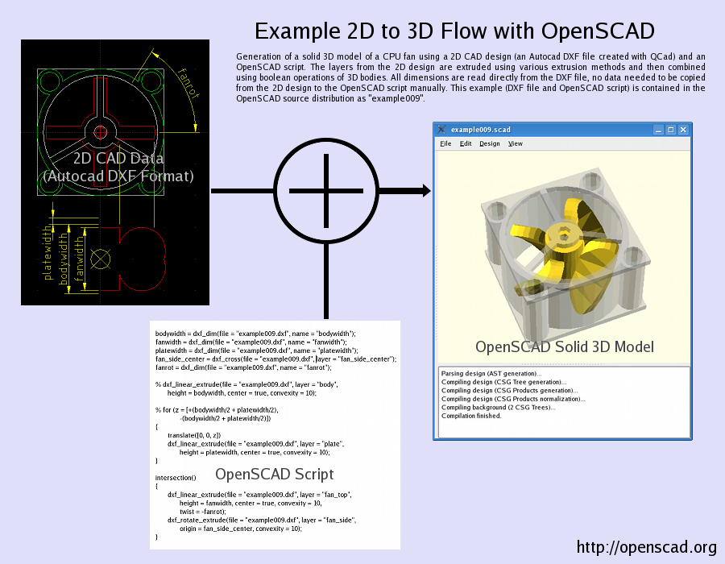
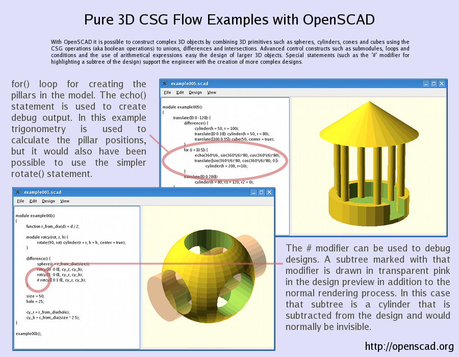

OpenSCAD is a software for creating solid 3D CAD objects. It is free software and available for Linux/UNIX, MS Windows and Mac OS X.
Unlike most free software for creating 3D models (such as the famous application Blender) it does not focus on the artistic aspects of 3D modelling but instead on the CAD aspects. Thus it might be the application you are looking for when you are planning to create 3D models of machine parts but pretty sure is not what you are looking for when you are more interested in creating computer-animated movies.
OpenSCAD is not an interactive modeller. Instead it is something like a 3D-compiler that reads in a script file that describes the object and renders the 3D model from this script file (see examples below). This gives you (the designer) full control over the modelling process and enables you to easily change any step in the modelling process or make designes that are defined by configurable parameters.
OpenSCAD provides two main modelling techniques: First there is constructive solid geometry (aka CSG) and second there is extrusion of 2D outlines. As data exchange format format for this 2D outlines Autocad DXF files are used. In addition to 2D paths for extrusion it is also possible to read design parametes from DXF files. Besides DXF files OpenSCAD can read and create 3D models in the STL and OFF file formats.
The sources to all examples are also bundled with the OpenSCAD source distribution and can be checked out from or browsed online in the OpenSCAD github Repository.


$ sudo add-apt-repository ppa:chrysn/openscad $ sudo apt-get update $ sudo apt-get install openscad
OpenSCAD is using the Qt4, the OpenCSG library and the CGAL library. This libraries are bundled with the pre compiled binaries. In addition to this libaries a GNU C compiler, the bison parser generator and some other tools are needed for building OpenSCAD from the sources. The binary releases include this libraries, so no extra software needs to be installed to get the precompiled binary packages running.
The OpenSCAD User Manual is hosted on wikibooks:
http://en.wikibooks.org/wiki/OpenSCAD_User_Manual
This User Manual is work in progress and everyone who is willing to help extending/improving it is very welcome!
We have a mailing list. You can subscribe to the list or browse the list archives here.
There is an IRC channel: #openscad at irc.freenode.net.
Have a look what Google has on OpenSCAD and the same for YouTube.
OpenSCAD is maintained by Marius Kintel
OpenSCAD has been written by Clifford Wolf and Marius Kintel